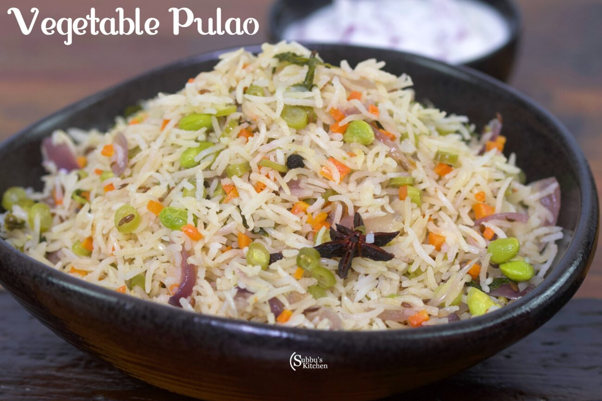

|  |
Ingredients:
- ¼ teaspoon saffron threads or ground turmeric
- 6 cups boiling water
- 3 tbs oil
- 2 medium onions, chopped
- 2 (1 inch) pieces cinnamon stick
- 4 whole cloves
- 1 teaspoon ground ginger
- 2 tablespoons ground cumin
- 1 teaspoon garlic powder
- 10 cardamom seeds
- 4 ½ cups long-grain white rice
- 1 cup plain yogurt
- 2 teaspoons salt
|